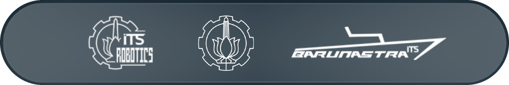
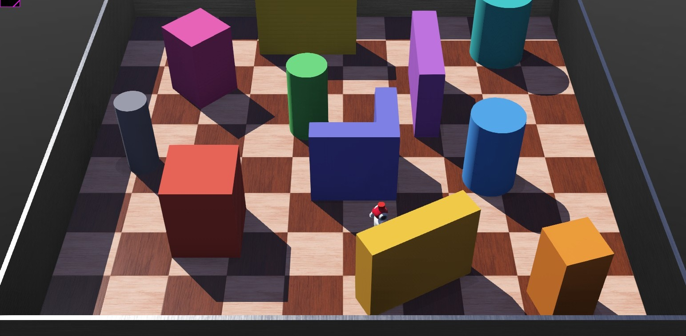
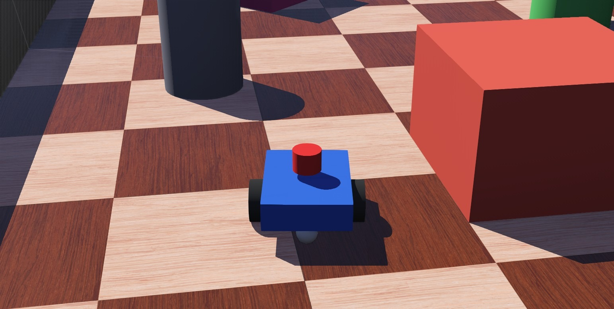
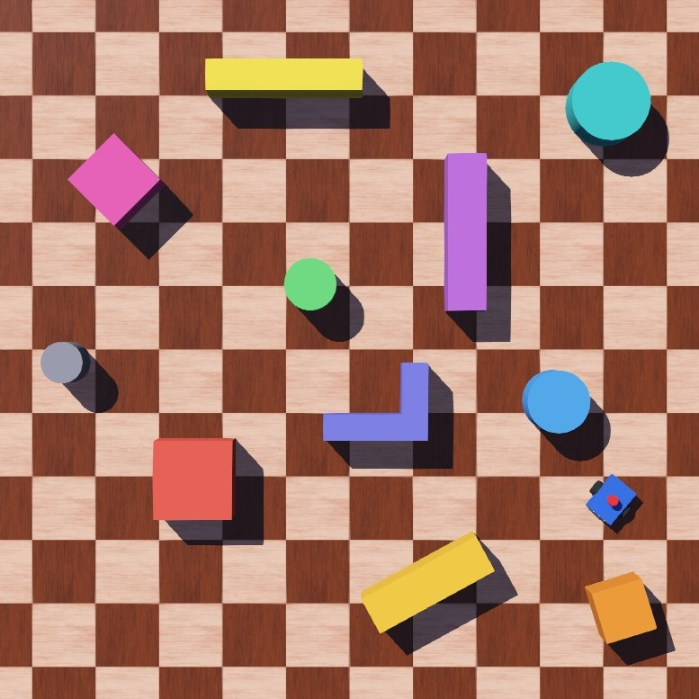
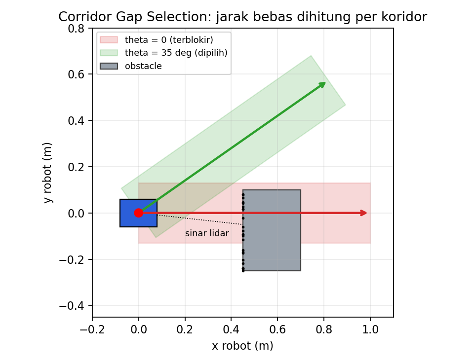
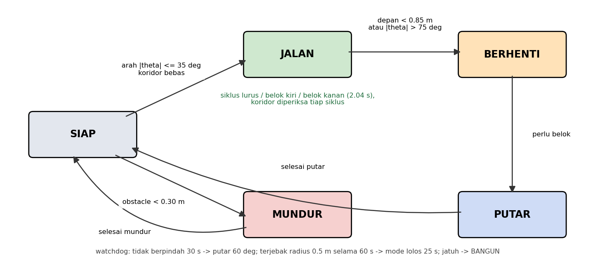
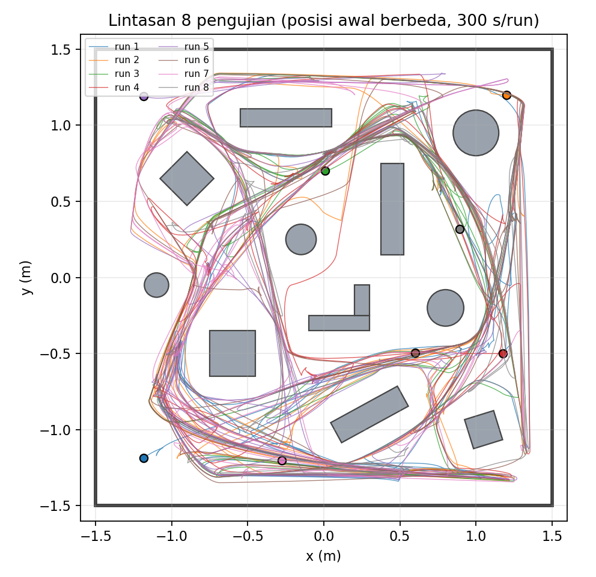
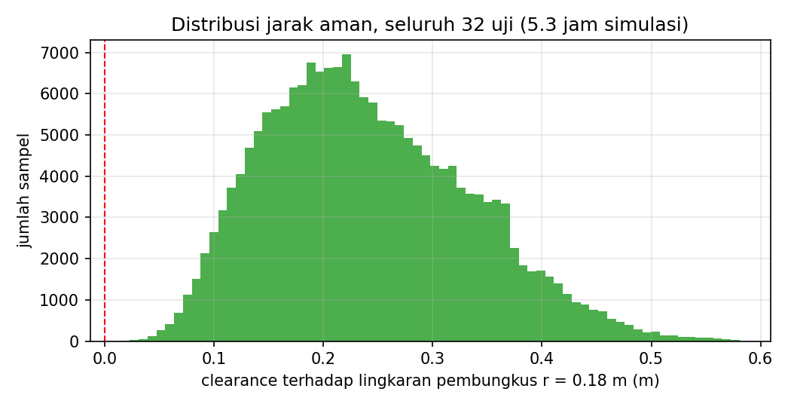
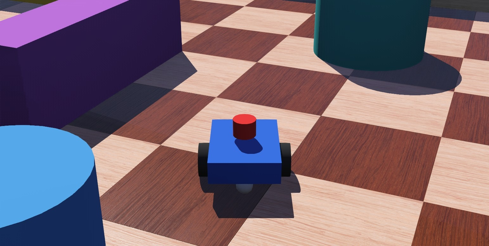

| Ketentuan | Yang dikerjakan | |
|---|---|---|
| Robot obstacle avoidance | Jalan otonom, diuji 40 menit tanpa tabrakan | ✓ |
| Bentuk robot bebas | Robot kustom dengan struktur seperti modul: Box, 2 HingeJoint, kastor BallJoint | ✓ |
| Obstacle di arena | 12 obstacle: kotak, tabung, dinding miring, siku-L | ✓ |
| Sensor bebas | Lidar 360°, 3 ultrasonik, 2 encoder roda | ✓ |

| Bagian | Node Webots |
|---|---|
| Body 16×12×4 cm | Shape + Box |
| Roda r 3 cm, L 14 cm | HingeJoint + RotationalMotor |
| Encoder | PositionSensor |
| Kastor r 1.5 cm | BallJoint + Sphere |
| Lidar 360 sinar | Lidar cylindrical |
| Ultrasonik ×3 | DistanceSensor sonar |


longi = x*cos(θ) + y*sin(θ) # maju lat = -x*sin(θ) + y*cos(θ) # samping terhalang jika longi > 0 dan |lat| < 13 cm
w = clamp(2.8 * theta, -3, 3) # rad/s v = 0.28 * clamp((depan - 0.17) / (0.60 - 0.17), 0, 1) * cos(theta)**2 # m/s

tools/stress_test.sh 300 # 8 posisi awal x 300 s
| Run | Start | Jarak | Tabrakan | Coverage |
|---|


File → Open World worlds/obstacle_avoidance.wbt ▶ Play
state=JELAJAH depan_bebas=0.84m state=MUNDUR min_depan=0.12m [evaluator] tabrakan: 0